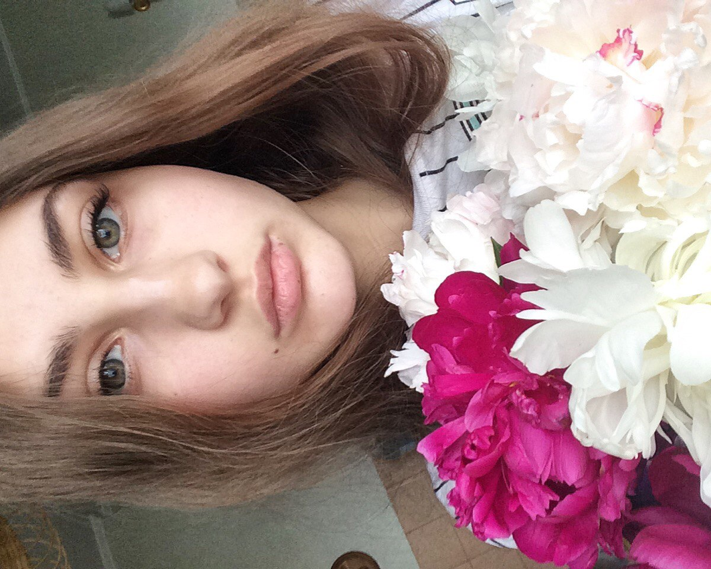
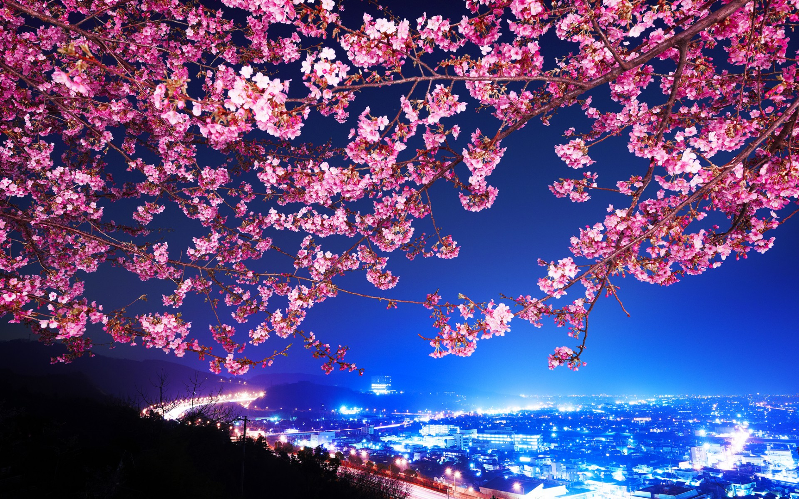
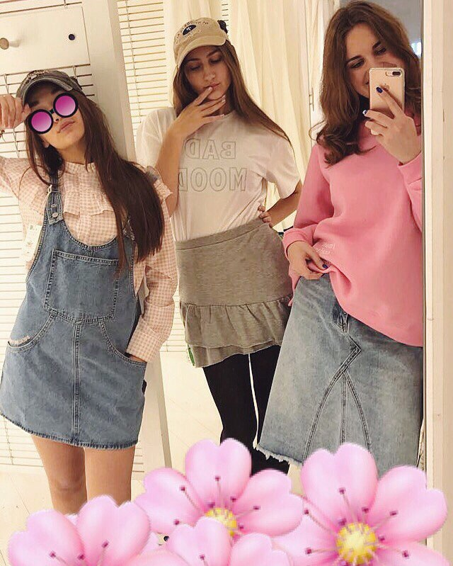
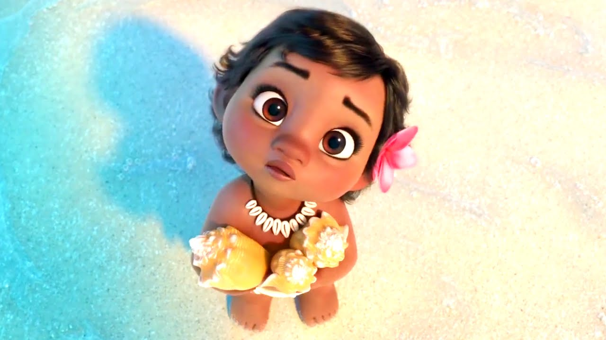
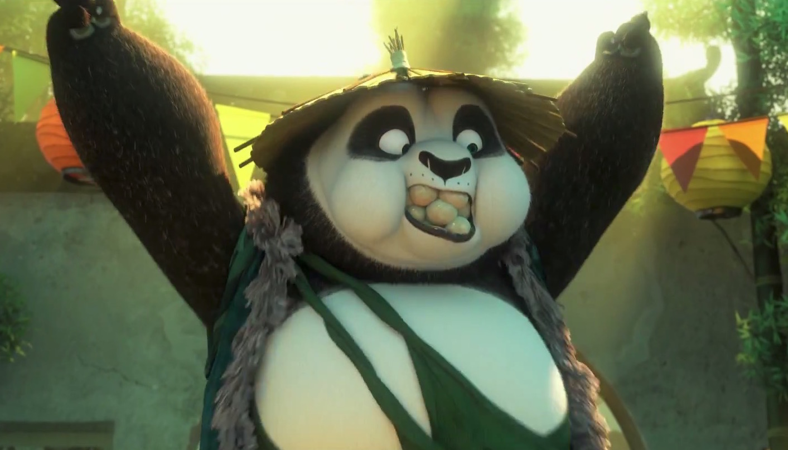
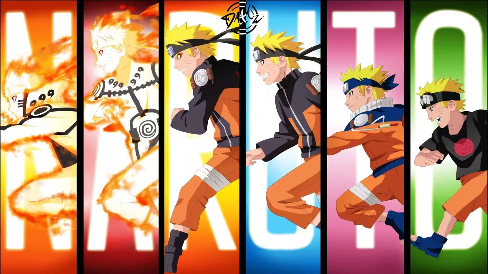

Мой профиль:
Толстых Дарья

S A K U R A :

А это мои лучшие подруги Эльза (слева) и Алла (справа)
Я их очень люблю

Мои любимые мультики:
Моана

Кунг-фу панда

Н А Р У Т О

Коротко о себе: Меня зовут Даша и мне 18 лет. В этом 2017 году я поступила на бюджет в ВШЭ и на данный момент это мое самое большое достижение:) Я безумно люблю свою семью и друзей и благодарю Судьбу за то, что она окружила меня такими замечательными людьми. Как и у всех у меня есть свои интересы и мечты . Прошло 2 года с тех пор, как я посмотрела свой первый японский мультфильм Хаяо Миядзаки "Принцесса Мононоке" (за исключением мультфильмов Миядзаки "Унесенные призраками"и "Ходячий замок" - их я посмотрела будучи совсем малышкой) и именно тогда зародилась моя бешеная любовь к Японии, которая не угасает ни на минуту. И ,конечно, я всем сердцем желаю посетить эту чудесную, загадочную и неприступную страну.
И я верю что мои мечты обязательно сбудутся, потому что нашим мечтам суждено сбываться.
Контакты:
Страничка vkontakte
GitHub
Телефон: +79150175490
E-mail: dvtolstykh@edu.hse.ru